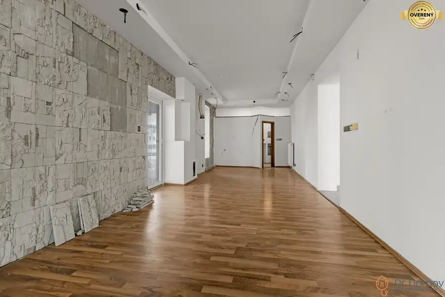
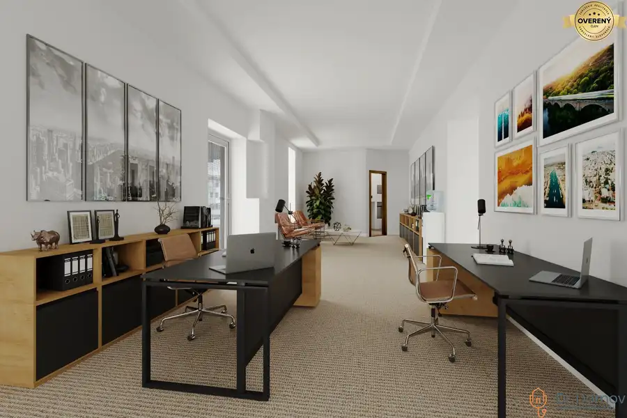
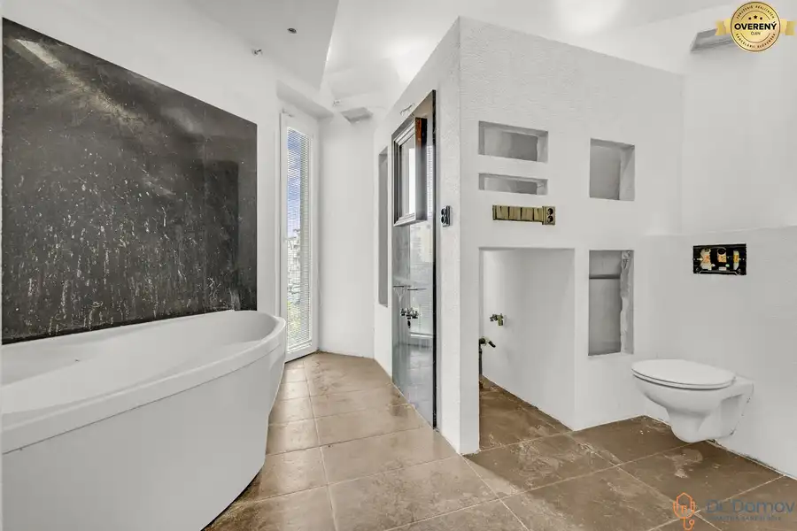
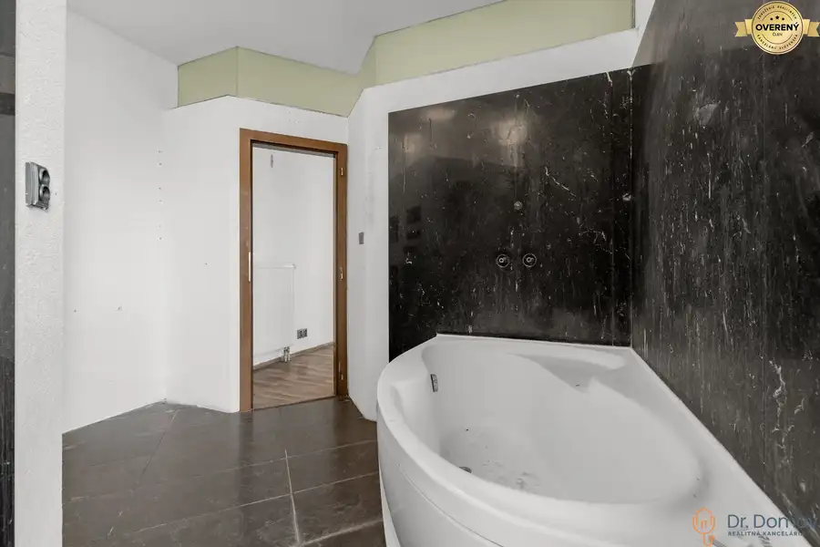
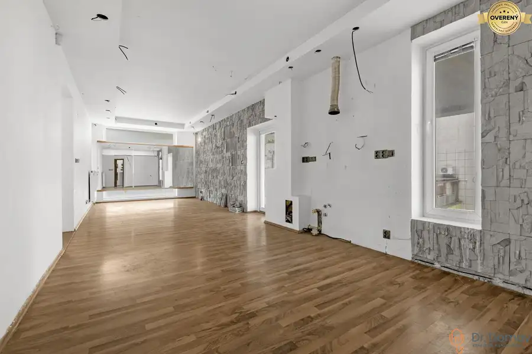
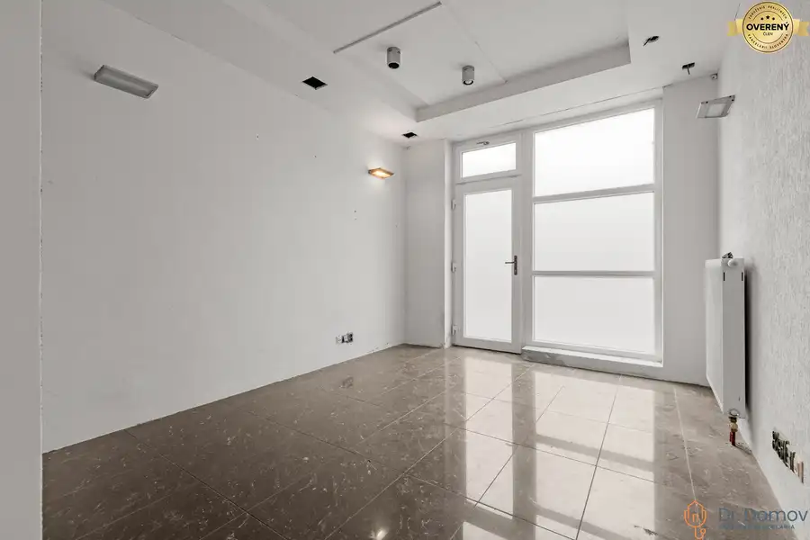
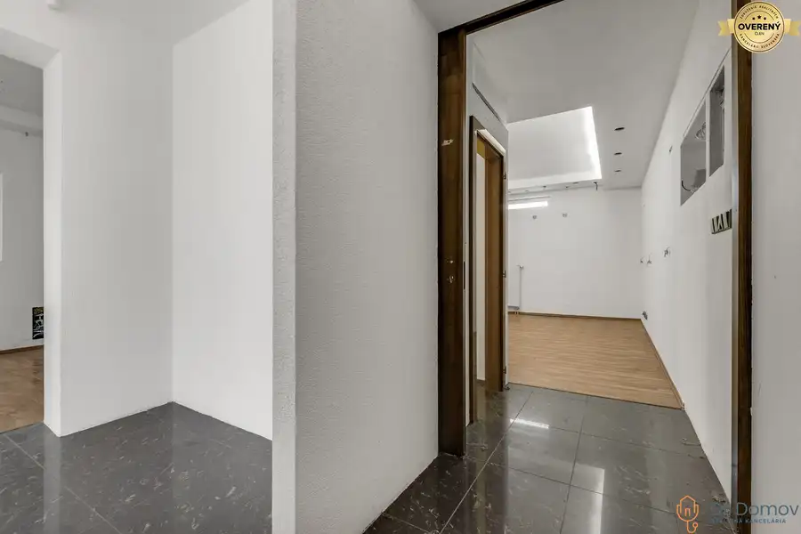

NA PREDAJ NEBYTOVÉ PRIESTORY NA KRESÁNKOVEJ ULICI V BRATISLAVE
Karlova Ves, Bratislava








- Plocha78.65 m²
- Poschodie0.
- Stavholopriestor
- Vlastníctvoosobné
O nehnuteľnosti
Dr. Domov ponúka na predaj nezariadené nebytové priestory s množstvom spôsobov využitia na nároží Kresánkovej ulici v polyfunkčnom bytovom dome v bratislavskej mestskej časti Karlova Ves.
Nebytové priestory sa nachádzajú na prízemí bytového domu, ktorý bol skolaudovaný v roku 2002. Priestory sa nachádzajú na 1. nadzemnom podlaží (prízemí) s dvoma vchodmi – z exteriéru námestia a interiéru bytového domu. Podlahová plocha priestorov je 78,65 m2 + sklad. Disponujú 3 samostatnými miestnosťami a príslušenstvom ktorými sú – chodba, samostatná toaleta, kúpeľňa s toaletou, kuchyňa spojená s miestnosťou (aktuálne demontovaná s prípravou na novú linku) a skladom prístupným zo spoločnej chodby, v ktorom sa nachádza osadený kotol na ústredné vykurovanie. Okná sú z plastových profilov s izolačným dvoj sklom. Podlahy sú upravené laminátovými parketami a keramickými dlažbami. Steny sú upravené hrubozrnnými omietkami. Stropy sú upravené sadrokartónom so svietidlami. V toalete je osadený záchod Geberit a umývadlo (demontované). V kúpeľni je osadená rohová plastová vaňa, keramické umývadlo (demontované) a záchod Geberit. Priestor má samostatne riešené vykurovanie a prípravu TÚV, plynový kotol je osadený v sklade pri byte. Radiátory sú doskové, v kúpeľni a toalete je vykurovací rebrík. Priestor je možné užívať ako sídlo firmy, kancelársky priestor, foto ateliér, obchodný priestor, e-shop, malú firmu, prípadne spojenie bývania a podnikania. Priestor vyžaduje modernizáciu podľa zámeru podnikania.
VÝMERY:
* Podlahová plocha nebytového priestoru je 78,65 m2 + sklad
* Podlahová plocha holo priestoru (bez sadrokartónových deliacich priečok) je cca 80 m2 + sklad
* Chodba: 5,15 m2
* Miestnosť s kuchynským kútom: 32,10 m2
* Miestnosť 2: 13,15 m2
* Miestnosť 3: 17,10 m2
* Toaleta: 2,20 m2
* Kúpeľňa s toaletou: 8,95 m2
ZÁKLADNÉ ÚDAJE:
* lokalita: Kresánkova ul.; Bratislava – Karlova Ves – Dlhé Diely
* polyfunkčný bytový dom: kolaudovaný 2002
* materiál: železobetón
* stav: pôvodný stav
* podlahy: laminátové parkety a keramická dlažba
* vykurovanie: vlastné
* orientácia: Juh, Západ a Východ - vchod
* BEZ ŤARCHY!
LOKALITA A OKOLIE:
Polohou je nehnuteľnosť situovaná v príjemnom prostredí vo vnútrobloku bytových domov na ulici Kresánkova, ktorá sa vyznačuje obľúbenosťou medzi rezidentami, dobrým napojením autom aj mestskou hromadnou dopravou a prepája okolitú občiansku vybavenosťou. V blízkosti sa nachádza mnoho zabehnutých prevádzok, kaviarní, reštaurácii, vinární či dokonca masáží a salónov. Zastávka MHD sa nachádza 260 metrov – do 4 minút chôdze.
POHĽAD MAKLÉRA:
Nebytové priestory s potenciálom budúceho podnikania či podnikania spojeného s bývaním.
Strategicky sa nachádzajú v strede Dlhých Dieloch a vyznačujú sa obľúbenosťou a kompletnou občianskou vybavenosťou. Stačí si premyslieť podnikateľský zámer a premietnuť ho do reality, práve v týchto priestoroch.
Neváhajte a dohodnite si s nami obhliadku nehnuteľnosti, sme tu pre Vás!
Odporúčame vidieť!
CENA: 160.000,-EUR
V cene je zahrnutý bezplatný právny servis zabezpečený advokátskou kanceláriou ako aj vypracovanie zmluvy o budúcej zmluve, kúpno-predajnej zmluvy, návrhu na vklad do katastra nehnuteľností a kompletného servisu financovania a plynulého servisu spojeného s prevodom vlastníckeho práva nehnuteľnosti.
Teším sa na naše stretnutie!
© Text a fotografie sú autorským dielom a majetkom realitnej kancelárie Dr. Domov
Parametre
- Úžitková plocha
- 78.65 m²
- Poschodie
- prízemie
- Vlastníctvo
- osobné
- Stav
- holopriestor
- Status
- aktívne
- Odvoz odpadu
- áno - separovaný
- Internet
- optika
- Kúpeľňa
- vaňa
- Vykurovanie
- vlastné - plyn
- Parkovanie
- verejné
- Postavené z
- iné
- Zariadenie
- nezariadený
- Zateplený objekt
- áno
- Energetický certifikát
- nie
- Okná
- plastové
- Novostavba
- áno
- Dátum zverejnenia
- 2025-07-28
Kde to je
Mohlo by Vás zaujímať
 OstatnéNové
22 000 €NA PREDAJ GARÁŽOVÉ STÁTIA V PODZEMNEJ GARÁŽI V PROJEKTE NOVÉ ŠUTY – BA
Vajnory, Bratislava
OstatnéNové
22 000 €NA PREDAJ GARÁŽOVÉ STÁTIA V PODZEMNEJ GARÁŽI V PROJEKTE NOVÉ ŠUTY – BA
Vajnory, Bratislava
 BytNové
284 990 €REZERVOVANÉ! ŠTÝLOVÝ A VEĽKÝ 3-IZBOVÝ BYT, KOMPLETNÁ REK., LAMAČ - BA
Lamač, Bratislava
3-izbový77 m²4. podlažie
BytNové
284 990 €REZERVOVANÉ! ŠTÝLOVÝ A VEĽKÝ 3-IZBOVÝ BYT, KOMPLETNÁ REK., LAMAČ - BA
Lamač, Bratislava
3-izbový77 m²4. podlažie
 BytNové
314 900 €NA PREDAJ MODERNÝ A VEĽKÝ 3-IZBOVÝ BYT, KOMPLETNÁ REK., SPUTNIKOVÁ UL.
Ružinov, Bratislava
3-izbový75.58 m²5. podlažie
BytNové
314 900 €NA PREDAJ MODERNÝ A VEĽKÝ 3-IZBOVÝ BYT, KOMPLETNÁ REK., SPUTNIKOVÁ UL.
Ružinov, Bratislava
3-izbový75.58 m²5. podlažie